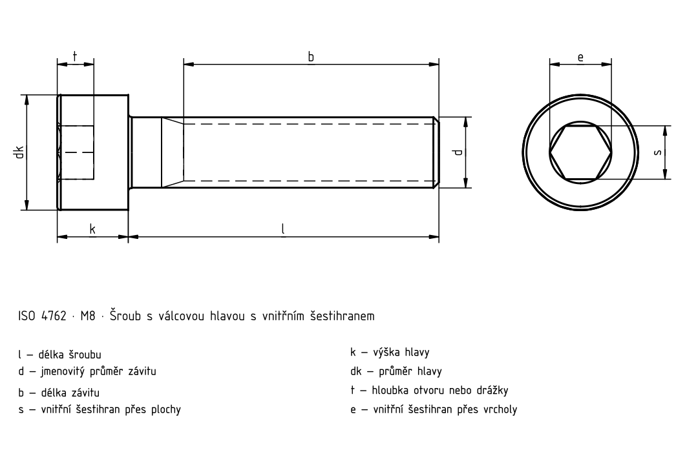

Válcová hlava, vnitřní šestihran

Válcová hlava, vnitřní šestihran · ISO 4762 · Normový kontext
| Položka | Hodnota |
|---|---|
| Normový kontext | ISO 4762:2004 |
| Výrobní třída | A |
| Pevnostní třída | Úplné znění normy je potřeba k ověření rozměrů, tolerancí a všech podmínek. |
Válcová hlava, vnitřní šestihran
Historický podklad; číselné hodnoty a výjimky nejsou úplně ověřené proti platné normě.
| d | P 1) | b _ref.2) | d _k max.3) | d _k max.4) | d _k min. | d _a max. | d _s max. | d _s min. | e _min.5) | l _f max. | k _max. | k _min. | r _min. | s | s _max.6) | s _max.7) | s _min. | t _min. | v _max. | d _w min. | w _min. |
|---|---|---|---|---|---|---|---|---|---|---|---|---|---|---|---|---|---|---|---|---|---|
| M1,6 | 0,35 | 15 | 3 | 3,14 | 2,86 | 2 | 1,6 | 1,46 | 1,73 | 0,34 | 1,6 | 1,46 | 0,1 | 1,5 | 1,545 | 1,560 | 1,520 | 0,7 | 0,16 | 2,72 | 0,55 |
| M2 | 0,4 | 16 | 3,8 | 3,98 | 3,62 | 2,6 | 2 | 1,86 | 1,73 | 0,51 | 2 | 1,86 | 0,1 | 1,5 | 1,545 | 1,560 | 1,520 | 1 | 0,2 | 3,48 | 0,55 |
| M2,5 | 0,45 | 17 | 4,5 | 4,68 | 4,32 | 3,1 | 2,5 | 2,36 | 2,3 | 0,51 | 2,5 | 2,36 | 0,1 | 2 | 2,045 | 2,060 | 2,020 | 1,1 | 0,25 | 4,18 | 0,85 |
| M3 | 0,5 | 18 | 5,5 | 5,68 | 5,32 | 3,6 | 3 | 2,86 | 2,87 | 0,51 | 3 | 2,86 | 0,1 | 2,5 | 2,56 | 2,58 | 2,52 | 1,3 | 0,3 | 5,07 | 1,15 |
| M4 | 0,7 | 20 | 7 | 7,22 | 6,78 | 4,7 | 4 | 3,82 | 3,44 | 0,60 | 4 | 3,82 | 0,2 | 3 | 3,071 | 3,080 | 3,020 | 2,00 | 0,4 | 6,53 | 1,4 |
| M5 | 0,8 | 22 | 8,5 | 8,72 | 8,28 | 5,7 | 5 | 4,82 | 4,58 | 0,60 | 5 | 4,82 | 0,2 | 4 | 4,084 | 4,095 | 4,020 | 2,50 | 0,5 | 8,03 | 1,9 |
| M6 | 1 | 24 | 10 | 10,22 | 9,78 | 6,8 | 6 | 5,82 | 5,72 | 0,68 | 6 | 5,70 | 0,25 | 5 | 5,084 | 5,140 | 5,020 | 3,00 | 0,6 | 9,38 | 2,3 |
| M8 | 1,25 | 28 | 13 | 13,27 | 12,73 | 9,2 | 8 | 7,78 | 6,86 | 1,02 | 8 | 7,64 | 0,4 | 6 | 6,095 | 6,140 | 6,020 | 4,00 | 0,8 | 12,33 | 3,3 |
| M10 | 1,5 | 32 | 16 | 16,27 | 15,73 | 11,2 | 10 | 9,78 | 9,15 | 1,02 | 10 | 9,64 | 0,4 | 8 | 8,115 | 8,175 | 8,025 | 5 | 1 | 15,33 | 4 |
| M12 | 1,75 | 36 | 18 | 18,27 | 17,73 | 13,7 | 12 | 11,73 | 11,43 | 1,45 | 12 | 11,57 | 0,6 | 10 | 10,115 | 10,175 | 10,025 | 6 | 1,2 | 17,23 | 4,8 |
| (M14) | 2 | 40 | 21 | 21,33 | 20,67 | 15,7 | 14 | 13,73 | 13,72 | 1,45 | 14 | 13,57 | 0,6 | 12 | 12,142 | 12,212 | 12,032 | 7 | 1,4 | 20,717 | 5,8 |
| M16 | 2 | 44 | 24 | 24,33 | 23,67 | 17,7 | 16 | 15,73 | 16 | 1,45 | 16 | 15,57 | 0,6 | 14 | 14,142 | 14,212 | 14,032 | 8 | 1,6 | 23,17 | 6,8 |
| M20 | 2,5 | 52 | 30 | 30,33 | 29,67 | 22,4 | 20 | 19,67 | 19,44 | 2,04 | 20 | 19,48 | 0,8 | 17 | 17,23 | — | 17,05 | 10 | 2 | 28,87 | 8,6 |
| M24 | 3 | 60 | 36 | 36,39 | 35,61 | 26,4 | 24 | 23,67 | 21,73 | 2,04 | 24 | 23,48 | 0,8 | 19 | 19,275 | — | 19,065 | 12 | 2,4 | 34,81 | 10,4 |
| M30 | 3,5 | 72 | 45 | 45,39 | 44,61 | 33,4 | 30 | 29,67 | 25,15 | 2,89 | 30 | 29,48 | 1 | 22 | 22,275 | — | 22,065 | 15,5 | 3 | 43,61 | 13,1 |
| M36 | 4 | 84 | 54 | 54,46 | 53,54 | 39,4 | 36 | 35,61 | 30,85 | 2,89 | 36 | 35,38 | 1 | 27 | 27,275 | — | 27,065 | 19 | 3,6 | 52,54 | 15,3 |
| M42 | 4,5 | 96 | 63 | 63,47 | 62,54 | 45,6 | 42 | 41,61 | 36,57 | 3,06 | 42 | 41,38 | 1,2 | 32 | 32,33 | 32,08 | – | 24 | 4,2 | 61,34 | 16,3 |
| M48 | 5 | 108 | 72 | 72,46 | 71,54 | 52,6 | 48 | 47,61 | 41,13 | 3,91 | 48 | 47,38 | 1,6 | 36 | 36,33 | 36,08 | – | 28 | 4,8 | 70,34 | 17,5 |
| M56 | 5,5 | 124 | 84 | 84,54 | 83,46 | 63 | 56 | 55,54 | 46,83 | 5,95 | 56 | 55,26 | 2 | 41 | 41,33 | 41,08 | – | 34 | 5,6 | 82,26 | 19 |
| M64 | 6 | 140 | 96 | 96,54 | 95,46 | 71 | 64 | 63,54 | 52,53 | 5,95 | 64 | 63,26 | 2 | 46 | 46,33 | 46,08 | – | 38 | 6,4 | 94,26 | 22 |
Válcová hlava, vnitřní šestihran · ISO 4762 · M1.6-M12 · Délky a kombinace
Historický podklad; číselné hodnoty a výjimky nejsou úplně ověřené proti platné normě.
| l | Δl | l_s / l_g | M1,6 | M2 | M2,5 | M3 | M4 | M5 | M6 | M8 | M10 | M12 |
|---|---|---|---|---|---|---|---|---|---|---|---|---|
| 2,5 | 0,2 | l _s min. / l _g max. | + / + | — | — | — | — | — | — | — | — | — |
| 3 | 0,2 | l _s min. / l _g max. | + / + | + / + | — | — | — | — | — | — | — | — |
| 4 | 0,24 | l _s min. / l _g max. | + / + | + / + | + / + | — | — | — | — | — | — | — |
| 5 | 0,24 | l _s min. / l _g max. | + / + | + / + | + / + | + / + | — | — | — | — | — | — |
| 6 | 0,24 | l _s min. / l _g max. | + / + | + / + | + / + | + / + | + / + | — | — | — | — | — |
| 8 | 0,29 | l _s min. / l _g max. | + / + | F(3P) | F(3P) | + / + | + / + | + / + | — | — | — | — |
| 10 | 0,29 | l _s min. / l _g max. | + / + | + / + | + / + | + / + | + / + | + / + | + / + | — | — | — |
| 12 | 0,35 | l _s min. / l _g max. | + / + | + / + | + / + | + / + | + / + | + / + | + / + | + / + | — | — |
| 16 | 0,35 | l _s min. / l _g max. | + / + | + / + | + / + | + / + | + / + | + / + | + / + | + / + | + / + | — |
| 20 | 0,42 | l _s min. / l _g max. | — | 2 / 4 | + / + | + / + | + / + | + / + | + / + | + / + | + / + | + / + |
| 25 | 0,42 | l _s min. / l _g max. | — | — | 5,75 / 8 | 4,5 / 7 | + / + | + / + | + / + | + / + | + / + | + / + |
| 30 | 0,42 | l _s min. / l _g max. | — | — | — | 9,5 / 12 | 6,5 / 10 | 8 / 8 | + / + | + / + | + / + | + / + |
| 35 | 0,5 | l _s min. / l _g max. | — | — | — | — | 11,5 / 15 | 9 / 13 | 6 / 11 | + / + | + / + | + / + |
| 40 | 0,5 | l _s min. / l _g max. | — | — | — | — | 16,5 / 20 | 14 / 18 | 11 / 16 | 5,75 / 12 | + / + | + / + |
| 45 | 0,5 | l _s min. / l _g max. | — | — | — | — | — | 19 / 23 | 16 / 21 | 10,75 / 17 | 5,5 / 13 | + / + |
| 50 | 0,5 | l _s min. / l _g max. | — | — | — | — | — | 24 / 28 | 21 / 26 | 15,75 / 22 | 10,5 / 18 | + / + |
| 55 | 0,6 | l _s min. / l _g max. | — | — | — | — | — | — | 26 / 31 | 20,75 / 27 | 15,5 / 23 | 10,25 / 19 |
| 60 | 0,6 | l _s min. / l _g max. | — | — | — | — | — | — | 31 / 36 | 25,75 / 32 | 20,5 / 28 | 15,25 / 24 |
| 65 | 0,6 | l _s min. / l _g max. | — | — | — | — | — | — | — | 30,75 / 37 | 25,5 / 33 | 20,25 / 29 |
| 70 | 0,6 | l _s min. / l _g max. | — | — | — | — | — | — | — | 35,75 / 42 | 30,5 / 38 | 25,25 / 34 |
| 80 | 0,6 | l _s min. / l _g max. | — | — | — | — | — | — | — | 45,75 / 52 | 40,5 / 48 | 35,25 / 44 |
| 90 | 0,7 | l _s min. / l _g max. | — | — | — | — | — | — | — | — | 50,5 / 58 | 45,25 / 54 |
| 100 | 0,7 | l _s min. / l _g max. | — | — | — | — | — | — | — | — | 60,5 / 68 | 55,25 / 64 |
| 110 | 0,7 | l _s min. / l _g max. | — | — | — | — | — | — | — | — | — | 65,25 / 74 |
| 120 | 0,7 | l _s min. / l _g max. | — | — | — | — | — | — | — | — | — | 75,25 / 84 |
Válcová hlava, vnitřní šestihran · ISO 4762 · M14-M64 · Délky a kombinace
Historický podklad; číselné hodnoty a výjimky nejsou úplně ověřené proti platné normě.
| l | Δl | l_s / l_g | (M14) | M16 | M20 | M24 | M30 | M36 | M42 | M48 | M56 | M64 |
|---|---|---|---|---|---|---|---|---|---|---|---|---|
| 25 | 0,42 | l _s min. / l _g max. | + / + | + / + | — | — | — | — | — | — | — | — |
| 30 | 0,42 | l _s min. / l _g max. | + / + | + / + | + / + | — | — | — | — | — | — | — |
| 35 | 0,5 | l _s min. / l _g max. | + / + | + / + | + / + | — | — | — | — | — | — | — |
| 40 | 0,5 | l _s min. / l _g max. | + / + | + / + | + / + | + / + | — | — | — | — | — | — |
| 45 | 0,5 | l _s min. / l _g max. | + / + | + / + | + / + | + / + | + / + | — | — | — | — | — |
| 50 | 0,5 | l _s min. / l _g max. | + / + | F(3P) | F(3P) | F(3P) | + / + | — | — | — | — | — |
| 55 | 0,6 | l _s min. / l _g max. | + / + | + / + | + / + | + / + | + / + | + / + | — | — | — | — |
| 60 | 0,6 | l _s min. / l _g max. | 10 / 20 | + / + | + / + | + / + | + / + | + / + | + / + | — | — | — |
| 65 | 0,6 | l _s min. / l _g max. | 15 / 25 | 11 / 21 | + / + | + / + | + / + | + / + | + / + | — | — | — |
| 70 | 0,6 | l _s min. / l _g max. | 20 / 30 | 16 / 26 | + / + | + / + | + / + | + / + | + / + | + / + | — | — |
| 80 | 0,6 | l _s min. / l _g max. | 30 / 40 | 26 / 36 | 15,5 / 28 | + / + | + / + | + / + | + / + | + / + | + / + | — |
| 90 | 0,7 | l _s min. / l _g max. | 40 / 50 | 36 / 46 | 25,5 / 38 | 15 / 30 | + / + | + / + | + / + | + / + | + / + | + / + |
| 100 | 0,7 | l _s min. / l _g max. | 50 / 60 | 46 / 56 | 35,5 / 48 | 25 / 40 | + / + | + / + | + / + | + / + | + / + | + / + |
| 110 | 0,7 | l _s min. / l _g max. | 60 / 70 | 56 / 66 | 45,5 / 58 | 35 / 50 | 20,5 / 38 | + / + | + / + | + / + | + / + | + / + |
| 120 | 0,7 | l _s min. / l _g max. | 70 / 80 | 66 / 76 | 55,5 / 68 | 45 / 60 | 30,5 / 48 | 16 / 36 | + / + | + / + | + / + | + / + |
| 130 | 0,7 | l _s min. / l _g max. | 80 / 90 | 76 / 86 | 65,5 / 78 | 55 / 70 | 40,5 / 58 | 26 / 46 | + / + | + / + | + / + | + / + |
| 140 | 0,8 | l _s min. / l _g max. | 90 / 100 | 86 / 96 | 75,5 / 88 | 65 / 80 | 50,5 / 68 | 36 / 56 | 21,5 / 44 | + / + | + / + | + / + |
| 150 | 0,8 | l _s min. / l _g max. | — | 96 / 106 | 85,5 / 98 | 75 / 90 | 60,5 / 78 | 46 / 66 | 31,5 / 54 | + / + | + / + | + / + |
| 160 | 0,8 | l _s min. / l _g max. | — | 106 / 116 | 95,5 / 108 | 85 / 100 | 70,5 / 88 | 56 / 76 | 41,5 / 64 | 27 / 52 | + / + | + / + |
| 180 | 0,8 | l _s min. / l _g max. | — | — | 115,5 / 128 | 105 / 120 | 90,5 / 108 | 76 / 96 | 61,5 / 84 | 47 / 72 | 28,5 / 56 | + / + |
| 200 | 0,925 | l _s min. / l _g max. | — | — | 135,5 / 148 | 125 / 140 | 110,5 / 128 | 96 / 116 | 81,5 / 104 | 67 / 92 | 48,5 / 76 | 20 / 60 |
| 220 | 0,925 | l _s min. / l _g max. | — | — | — | — | — | — | 101,5 / 124 | 87 / 112 | 68,5 / 96 | 50 / 80 |
| 240 | 0,925 | l _s min. / l _g max. | — | — | — | — | — | — | 121,5 / 144 | 107 / 132 | 88,5 / 116 | 70 / 100 |
| 260 | 1,05 | l _s min. / l _g max. | — | — | — | — | — | — | 141,5 / 164 | 127 / 152 | 108,5 / 136 | 90 / 120 |
| 280 | 1,05 | l _s min. / l _g max. | — | — | — | — | — | — | 161,5 / 184 | 147 / 172 | 128,5 / 156 | 110 / 140 |
| 300 | 1,05 | l _s min. / l _g max. | — | — | — | — | — | — | 181,5 / 204 | 167 / 192 | 148,5 / 176 | 130 / 160 |
Válcová hlava, vnitřní šestihran · ISO 4762 · Normový kontext
| Položka | Hodnota |
|---|---|
| Normový kontext | ISO 4762:2004 |
| Výrobní třída | A |
| Pevnostní třída | Úplné znění normy je potřeba k ověření rozměrů, tolerancí a všech podmínek. |
Válcová hlava, vnitřní šestihran
Historický podklad; číselné hodnoty a výjimky nejsou úplně ověřené proti platné normě.
| d | P 1) | b _ref.2) | d _k max.3) | d _k max.4) | d _k min. | d _a max. |
|---|---|---|---|---|---|---|
| M1,6 | 0,35 | 15 | 3 | 3,14 | 2,86 | 2 |
| M2 | 0,4 | 16 | 3,8 | 3,98 | 3,62 | 2,6 |
| M2,5 | 0,45 | 17 | 4,5 | 4,68 | 4,32 | 3,1 |
| M3 | 0,5 | 18 | 5,5 | 5,68 | 5,32 | 3,6 |
| M4 | 0,7 | 20 | 7 | 7,22 | 6,78 | 4,7 |
| M5 | 0,8 | 22 | 8,5 | 8,72 | 8,28 | 5,7 |
| M6 | 1 | 24 | 10 | 10,22 | 9,78 | 6,8 |
| M8 | 1,25 | 28 | 13 | 13,27 | 12,73 | 9,2 |
| M10 | 1,5 | 32 | 16 | 16,27 | 15,73 | 11,2 |
| M12 | 1,75 | 36 | 18 | 18,27 | 17,73 | 13,7 |
| (M14) | 2 | 40 | 21 | 21,33 | 20,67 | 15,7 |
| M16 | 2 | 44 | 24 | 24,33 | 23,67 | 17,7 |
| M20 | 2,5 | 52 | 30 | 30,33 | 29,67 | 22,4 |
| M24 | 3 | 60 | 36 | 36,39 | 35,61 | 26,4 |
| M30 | 3,5 | 72 | 45 | 45,39 | 44,61 | 33,4 |
| M36 | 4 | 84 | 54 | 54,46 | 53,54 | 39,4 |
| M42 | 4,5 | 96 | 63 | 63,47 | 62,54 | 45,6 |
| M48 | 5 | 108 | 72 | 72,46 | 71,54 | 52,6 |
| M56 | 5,5 | 124 | 84 | 84,54 | 83,46 | 63 |
| M64 | 6 | 140 | 96 | 96,54 | 95,46 | 71 |
Válcová hlava, vnitřní šestihran
Historický podklad; číselné hodnoty a výjimky nejsou úplně ověřené proti platné normě.
| d | d _s max. | d _s min. | e _min.5) | l _f max. | k _max. | k _min. |
|---|---|---|---|---|---|---|
| M1,6 | 1,6 | 1,46 | 1,73 | 0,34 | 1,6 | 1,46 |
| M2 | 2 | 1,86 | 1,73 | 0,51 | 2 | 1,86 |
| M2,5 | 2,5 | 2,36 | 2,3 | 0,51 | 2,5 | 2,36 |
| M3 | 3 | 2,86 | 2,87 | 0,51 | 3 | 2,86 |
| M4 | 4 | 3,82 | 3,44 | 0,60 | 4 | 3,82 |
| M5 | 5 | 4,82 | 4,58 | 0,60 | 5 | 4,82 |
| M6 | 6 | 5,82 | 5,72 | 0,68 | 6 | 5,70 |
| M8 | 8 | 7,78 | 6,86 | 1,02 | 8 | 7,64 |
| M10 | 10 | 9,78 | 9,15 | 1,02 | 10 | 9,64 |
| M12 | 12 | 11,73 | 11,43 | 1,45 | 12 | 11,57 |
| (M14) | 14 | 13,73 | 13,72 | 1,45 | 14 | 13,57 |
| M16 | 16 | 15,73 | 16 | 1,45 | 16 | 15,57 |
| M20 | 20 | 19,67 | 19,44 | 2,04 | 20 | 19,48 |
| M24 | 24 | 23,67 | 21,73 | 2,04 | 24 | 23,48 |
| M30 | 30 | 29,67 | 25,15 | 2,89 | 30 | 29,48 |
| M36 | 36 | 35,61 | 30,85 | 2,89 | 36 | 35,38 |
| M42 | 42 | 41,61 | 36,57 | 3,06 | 42 | 41,38 |
| M48 | 48 | 47,61 | 41,13 | 3,91 | 48 | 47,38 |
| M56 | 56 | 55,54 | 46,83 | 5,95 | 56 | 55,26 |
| M64 | 64 | 63,54 | 52,53 | 5,95 | 64 | 63,26 |
Válcová hlava, vnitřní šestihran
Historický podklad; číselné hodnoty a výjimky nejsou úplně ověřené proti platné normě.
| d | r _min. | s | s _max.6) | s _max.7) | s _min. | t _min. |
|---|---|---|---|---|---|---|
| M1,6 | 0,1 | 1,5 | 1,545 | 1,560 | 1,520 | 0,7 |
| M2 | 0,1 | 1,5 | 1,545 | 1,560 | 1,520 | 1 |
| M2,5 | 0,1 | 2 | 2,045 | 2,060 | 2,020 | 1,1 |
| M3 | 0,1 | 2,5 | 2,56 | 2,58 | 2,52 | 1,3 |
| M4 | 0,2 | 3 | 3,071 | 3,080 | 3,020 | 2,00 |
| M5 | 0,2 | 4 | 4,084 | 4,095 | 4,020 | 2,50 |
| M6 | 0,25 | 5 | 5,084 | 5,140 | 5,020 | 3,00 |
| M8 | 0,4 | 6 | 6,095 | 6,140 | 6,020 | 4,00 |
| M10 | 0,4 | 8 | 8,115 | 8,175 | 8,025 | 5 |
| M12 | 0,6 | 10 | 10,115 | 10,175 | 10,025 | 6 |
| (M14) | 0,6 | 12 | 12,142 | 12,212 | 12,032 | 7 |
| M16 | 0,6 | 14 | 14,142 | 14,212 | 14,032 | 8 |
| M20 | 0,8 | 17 | 17,23 | — | 17,05 | 10 |
| M24 | 0,8 | 19 | 19,275 | — | 19,065 | 12 |
| M30 | 1 | 22 | 22,275 | — | 22,065 | 15,5 |
| M36 | 1 | 27 | 27,275 | — | 27,065 | 19 |
| M42 | 1,2 | 32 | 32,33 | 32,08 | – | 24 |
| M48 | 1,6 | 36 | 36,33 | 36,08 | – | 28 |
| M56 | 2 | 41 | 41,33 | 41,08 | – | 34 |
| M64 | 2 | 46 | 46,33 | 46,08 | – | 38 |
Válcová hlava, vnitřní šestihran
Historický podklad; číselné hodnoty a výjimky nejsou úplně ověřené proti platné normě.
| d | v _max. | d _w min. | w _min. |
|---|---|---|---|
| M1,6 | 0,16 | 2,72 | 0,55 |
| M2 | 0,2 | 3,48 | 0,55 |
| M2,5 | 0,25 | 4,18 | 0,85 |
| M3 | 0,3 | 5,07 | 1,15 |
| M4 | 0,4 | 6,53 | 1,4 |
| M5 | 0,5 | 8,03 | 1,9 |
| M6 | 0,6 | 9,38 | 2,3 |
| M8 | 0,8 | 12,33 | 3,3 |
| M10 | 1 | 15,33 | 4 |
| M12 | 1,2 | 17,23 | 4,8 |
| (M14) | 1,4 | 20,717 | 5,8 |
| M16 | 1,6 | 23,17 | 6,8 |
| M20 | 2 | 28,87 | 8,6 |
| M24 | 2,4 | 34,81 | 10,4 |
| M30 | 3 | 43,61 | 13,1 |
| M36 | 3,6 | 52,54 | 15,3 |
| M42 | 4,2 | 61,34 | 16,3 |
| M48 | 4,8 | 70,34 | 17,5 |
| M56 | 5,6 | 82,26 | 19 |
| M64 | 6,4 | 94,26 | 22 |
Válcová hlava, vnitřní šestihran · ISO 4762 · M1.6-M12 · Délky a kombinace
Historický podklad; číselné hodnoty a výjimky nejsou úplně ověřené proti platné normě.
| l | Δl | l_s / l_g | M1,6 | M2 | M2,5 | M3 |
|---|---|---|---|---|---|---|
| 2,5 | 0,2 | l _s min. / l _g max. | + / + | — | — | — |
| 3 | 0,2 | l _s min. / l _g max. | + / + | + / + | — | — |
| 4 | 0,24 | l _s min. / l _g max. | + / + | + / + | + / + | — |
| 5 | 0,24 | l _s min. / l _g max. | + / + | + / + | + / + | + / + |
| 6 | 0,24 | l _s min. / l _g max. | + / + | + / + | + / + | + / + |
| 8 | 0,29 | l _s min. / l _g max. | + / + | F(3P) | F(3P) | + / + |
| 10 | 0,29 | l _s min. / l _g max. | + / + | + / + | + / + | + / + |
| 12 | 0,35 | l _s min. / l _g max. | + / + | + / + | + / + | + / + |
| 16 | 0,35 | l _s min. / l _g max. | + / + | + / + | + / + | + / + |
| 20 | 0,42 | l _s min. / l _g max. | — | 2 / 4 | + / + | + / + |
| 25 | 0,42 | l _s min. / l _g max. | — | — | 5,75 / 8 | 4,5 / 7 |
| 30 | 0,42 | l _s min. / l _g max. | — | — | — | 9,5 / 12 |
| 35 | 0,5 | l _s min. / l _g max. | — | — | — | — |
| 40 | 0,5 | l _s min. / l _g max. | — | — | — | — |
| 45 | 0,5 | l _s min. / l _g max. | — | — | — | — |
| 50 | 0,5 | l _s min. / l _g max. | — | — | — | — |
| 55 | 0,6 | l _s min. / l _g max. | — | — | — | — |
| 60 | 0,6 | l _s min. / l _g max. | — | — | — | — |
| 65 | 0,6 | l _s min. / l _g max. | — | — | — | — |
| 70 | 0,6 | l _s min. / l _g max. | — | — | — | — |
| 80 | 0,6 | l _s min. / l _g max. | — | — | — | — |
| 90 | 0,7 | l _s min. / l _g max. | — | — | — | — |
| 100 | 0,7 | l _s min. / l _g max. | — | — | — | — |
| 110 | 0,7 | l _s min. / l _g max. | — | — | — | — |
| 120 | 0,7 | l _s min. / l _g max. | — | — | — | — |
Válcová hlava, vnitřní šestihran · ISO 4762 · M1.6-M12 · Délky a kombinace
Historický podklad; číselné hodnoty a výjimky nejsou úplně ověřené proti platné normě.
| l | M4 | M5 | M6 | M8 | M10 | M12 |
|---|---|---|---|---|---|---|
| 2,5 | — | — | — | — | — | — |
| 3 | — | — | — | — | — | — |
| 4 | — | — | — | — | — | — |
| 5 | — | — | — | — | — | — |
| 6 | + / + | — | — | — | — | — |
| 8 | + / + | + / + | — | — | — | — |
| 10 | + / + | + / + | + / + | — | — | — |
| 12 | + / + | + / + | + / + | + / + | — | — |
| 16 | + / + | + / + | + / + | + / + | + / + | — |
| 20 | + / + | + / + | + / + | + / + | + / + | + / + |
| 25 | + / + | + / + | + / + | + / + | + / + | + / + |
| 30 | 6,5 / 10 | 8 / 8 | + / + | + / + | + / + | + / + |
| 35 | 11,5 / 15 | 9 / 13 | 6 / 11 | + / + | + / + | + / + |
| 40 | 16,5 / 20 | 14 / 18 | 11 / 16 | 5,75 / 12 | + / + | + / + |
| 45 | — | 19 / 23 | 16 / 21 | 10,75 / 17 | 5,5 / 13 | + / + |
| 50 | — | 24 / 28 | 21 / 26 | 15,75 / 22 | 10,5 / 18 | + / + |
| 55 | — | — | 26 / 31 | 20,75 / 27 | 15,5 / 23 | 10,25 / 19 |
| 60 | — | — | 31 / 36 | 25,75 / 32 | 20,5 / 28 | 15,25 / 24 |
| 65 | — | — | — | 30,75 / 37 | 25,5 / 33 | 20,25 / 29 |
| 70 | — | — | — | 35,75 / 42 | 30,5 / 38 | 25,25 / 34 |
| 80 | — | — | — | 45,75 / 52 | 40,5 / 48 | 35,25 / 44 |
| 90 | — | — | — | — | 50,5 / 58 | 45,25 / 54 |
| 100 | — | — | — | — | 60,5 / 68 | 55,25 / 64 |
| 110 | — | — | — | — | — | 65,25 / 74 |
| 120 | — | — | — | — | — | 75,25 / 84 |
Válcová hlava, vnitřní šestihran · ISO 4762 · M14-M64 · Délky a kombinace
Historický podklad; číselné hodnoty a výjimky nejsou úplně ověřené proti platné normě.
| l | Δl | l_s / l_g | (M14) | M16 | M20 | M24 |
|---|---|---|---|---|---|---|
| 25 | 0,42 | l _s min. / l _g max. | + / + | + / + | — | — |
| 30 | 0,42 | l _s min. / l _g max. | + / + | + / + | + / + | — |
| 35 | 0,5 | l _s min. / l _g max. | + / + | + / + | + / + | — |
| 40 | 0,5 | l _s min. / l _g max. | + / + | + / + | + / + | + / + |
| 45 | 0,5 | l _s min. / l _g max. | + / + | + / + | + / + | + / + |
| 50 | 0,5 | l _s min. / l _g max. | + / + | F(3P) | F(3P) | F(3P) |
| 55 | 0,6 | l _s min. / l _g max. | + / + | + / + | + / + | + / + |
| 60 | 0,6 | l _s min. / l _g max. | 10 / 20 | + / + | + / + | + / + |
| 65 | 0,6 | l _s min. / l _g max. | 15 / 25 | 11 / 21 | + / + | + / + |
| 70 | 0,6 | l _s min. / l _g max. | 20 / 30 | 16 / 26 | + / + | + / + |
| 80 | 0,6 | l _s min. / l _g max. | 30 / 40 | 26 / 36 | 15,5 / 28 | + / + |
| 90 | 0,7 | l _s min. / l _g max. | 40 / 50 | 36 / 46 | 25,5 / 38 | 15 / 30 |
| 100 | 0,7 | l _s min. / l _g max. | 50 / 60 | 46 / 56 | 35,5 / 48 | 25 / 40 |
| 110 | 0,7 | l _s min. / l _g max. | 60 / 70 | 56 / 66 | 45,5 / 58 | 35 / 50 |
| 120 | 0,7 | l _s min. / l _g max. | 70 / 80 | 66 / 76 | 55,5 / 68 | 45 / 60 |
| 130 | 0,7 | l _s min. / l _g max. | 80 / 90 | 76 / 86 | 65,5 / 78 | 55 / 70 |
| 140 | 0,8 | l _s min. / l _g max. | 90 / 100 | 86 / 96 | 75,5 / 88 | 65 / 80 |
| 150 | 0,8 | l _s min. / l _g max. | — | 96 / 106 | 85,5 / 98 | 75 / 90 |
| 160 | 0,8 | l _s min. / l _g max. | — | 106 / 116 | 95,5 / 108 | 85 / 100 |
| 180 | 0,8 | l _s min. / l _g max. | — | — | 115,5 / 128 | 105 / 120 |
| 200 | 0,925 | l _s min. / l _g max. | — | — | 135,5 / 148 | 125 / 140 |
| 220 | 0,925 | l _s min. / l _g max. | — | — | — | — |
| 240 | 0,925 | l _s min. / l _g max. | — | — | — | — |
| 260 | 1,05 | l _s min. / l _g max. | — | — | — | — |
| 280 | 1,05 | l _s min. / l _g max. | — | — | — | — |
| 300 | 1,05 | l _s min. / l _g max. | — | — | — | — |
Válcová hlava, vnitřní šestihran · ISO 4762 · M14-M64 · Délky a kombinace
Historický podklad; číselné hodnoty a výjimky nejsou úplně ověřené proti platné normě.
| l | M30 | M36 | M42 | M48 | M56 | M64 |
|---|---|---|---|---|---|---|
| 25 | — | — | — | — | — | — |
| 30 | — | — | — | — | — | — |
| 35 | — | — | — | — | — | — |
| 40 | — | — | — | — | — | — |
| 45 | + / + | — | — | — | — | — |
| 50 | + / + | — | — | — | — | — |
| 55 | + / + | + / + | — | — | — | — |
| 60 | + / + | + / + | + / + | — | — | — |
| 65 | + / + | + / + | + / + | — | — | — |
| 70 | + / + | + / + | + / + | + / + | — | — |
| 80 | + / + | + / + | + / + | + / + | + / + | — |
| 90 | + / + | + / + | + / + | + / + | + / + | + / + |
| 100 | + / + | + / + | + / + | + / + | + / + | + / + |
| 110 | 20,5 / 38 | + / + | + / + | + / + | + / + | + / + |
| 120 | 30,5 / 48 | 16 / 36 | + / + | + / + | + / + | + / + |
| 130 | 40,5 / 58 | 26 / 46 | + / + | + / + | + / + | + / + |
| 140 | 50,5 / 68 | 36 / 56 | 21,5 / 44 | + / + | + / + | + / + |
| 150 | 60,5 / 78 | 46 / 66 | 31,5 / 54 | + / + | + / + | + / + |
| 160 | 70,5 / 88 | 56 / 76 | 41,5 / 64 | 27 / 52 | + / + | + / + |
| 180 | 90,5 / 108 | 76 / 96 | 61,5 / 84 | 47 / 72 | 28,5 / 56 | + / + |
| 200 | 110,5 / 128 | 96 / 116 | 81,5 / 104 | 67 / 92 | 48,5 / 76 | 20 / 60 |
| 220 | — | — | 101,5 / 124 | 87 / 112 | 68,5 / 96 | 50 / 80 |
| 240 | — | — | 121,5 / 144 | 107 / 132 | 88,5 / 116 | 70 / 100 |
| 260 | — | — | 141,5 / 164 | 127 / 152 | 108,5 / 136 | 90 / 120 |
| 280 | — | — | 161,5 / 184 | 147 / 172 | 128,5 / 156 | 110 / 140 |
| 300 | — | — | 181,5 / 204 | 167 / 192 | 148,5 / 176 | 130 / 160 |